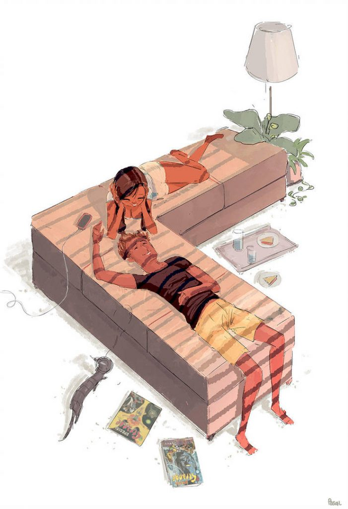

*********
THE FALL
*********
I fell for someone
For Someone, I Shouldn't have.
Its a Sin, I know
But what's a
sin
if never
comitted?
But then what is
love
If it is never confessed?
Does God hate us
or
tells us that there are things
that are never meant to be?
I'm going to
hell...
For I fell
For someone
For someone,
I shouldn't have.
~The one who fell
*********
END OF POEM
*********